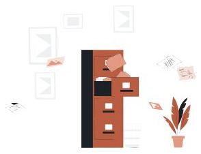

<section id="l46-07" style="background:#F4F5F7;color:#25282D;font-family:'Noto Sans KR', Arial, sans-serif;padding:88px 106px 106px;display:flex;flex-direction:column;gap:20px">
<p style="font-size:26px;font-weight:700;letter-spacing:6px;color:#C4613F">검색 도구만 있을 때</p>
<h2 style="font-family:'Noto Serif KR', Georgia, serif;font-size:68px;font-weight:700;line-height:1.2;color:#25282D">검색만 하는 에이전트는 헤매야 한다</h2>
<x-connector x1="646" y1="600" x2="1220" y2="600" head="end" style="color:#6B7280;border-width:2px"></x-connector>
<div style="position:absolute;left:146px;top:440px;width:500px;height:320px;display:flex;align-items:center;gap:22px;background:#FFFFFF;border:1px solid #E4E6EA;border-radius:12px;box-shadow:0 4px 16px rgba(30,35,45,0.07);padding:0 26px">
<div style="width:64px;height:64px;flex:none;display:flex;align-items:center;justify-content:center;border:2px solid #D97757;border-radius:50%;background:#FBF1EC"><x-icon name="Cloud" style="color:#D97757;width:28px;height:28px"></x-icon></div>
<div style="display:flex;flex-direction:column;gap:6px"><h3 style="font-family:'Noto Serif KR', Georgia, serif;font-size:32px;font-weight:700;color:#25282D">에이전트</h3><p style="font-size:24px;line-height:1.4;color:#5F6670">검색하고, 열어 보고, 다시 검색</p></div>
</div>
<div style="position:absolute;left:1220px;top:330px;width:594px;height:580px;display:flex;flex-direction:column;align-items:center;justify-content:center;gap:10px;background:#FFFFFF;border:3px solid #D97757;border-radius:12px;box-shadow:0 4px 16px rgba(30,35,45,0.07);padding:18px">

<h3 style="font-family:'Noto Serif KR', Georgia, serif;font-size:32px;font-weight:700;color:#C4613F;text-align:center">정책 문서</h3>
<p style="font-size:24px;line-height:1.4;color:#5F6670;text-align:center">반품, 배송, 가격 조정, 파손 상품</p>
</div>
<aside>원문 제목: Search-only agents must explore (SEARCH TOOL ONLY). Agent (Search, open, search again) → Policy documents (Returns, shipping, price adjustments, damaged items).</aside>
</section>
